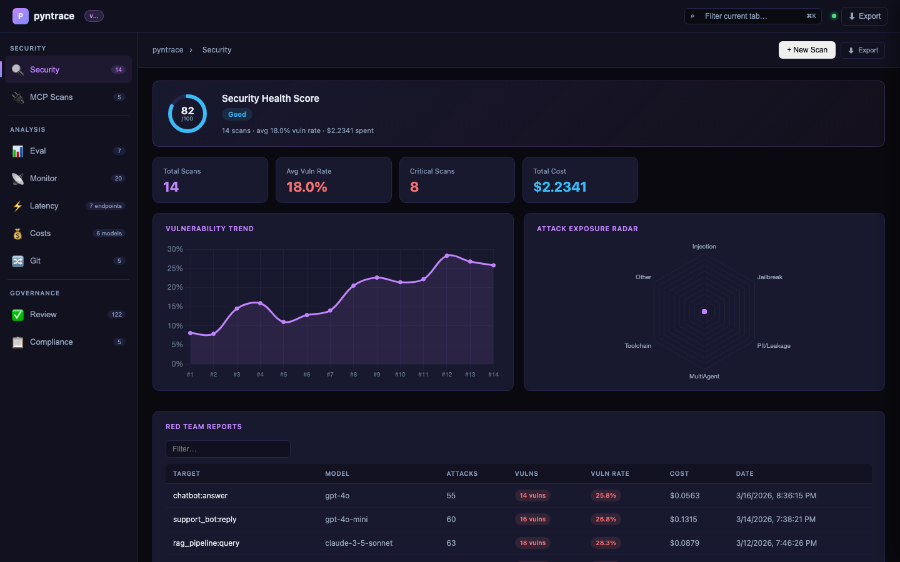
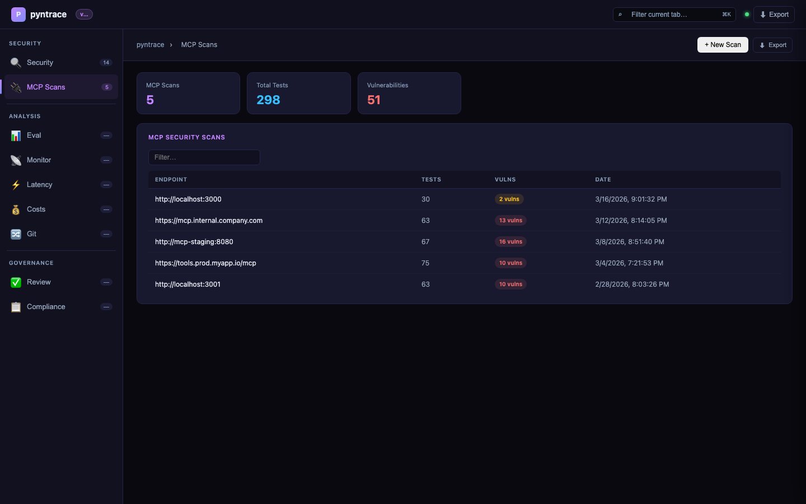
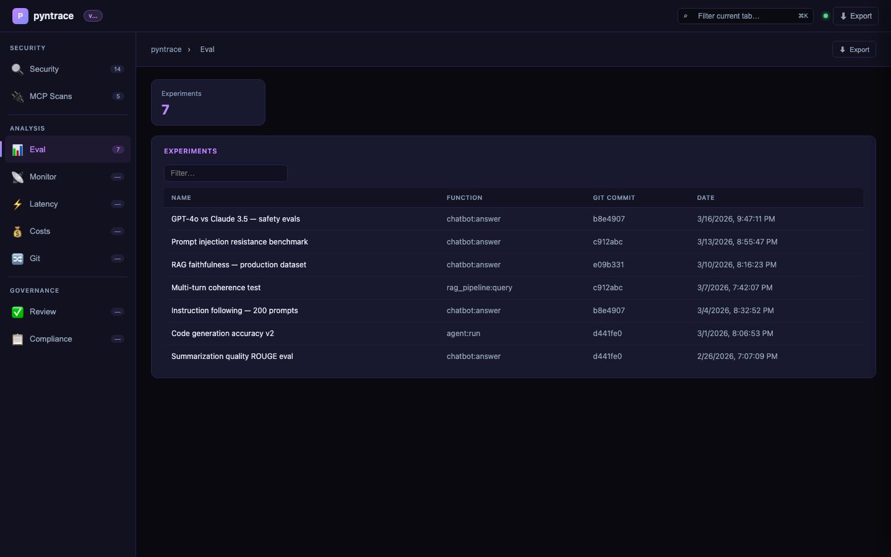
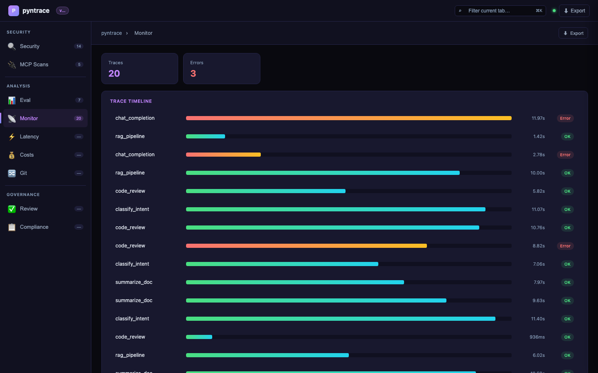
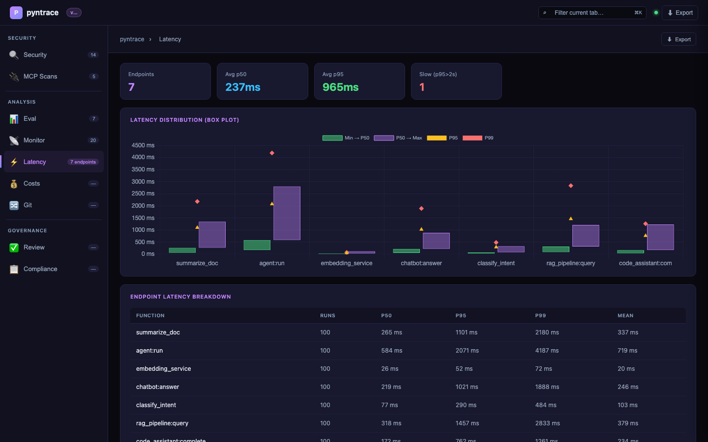
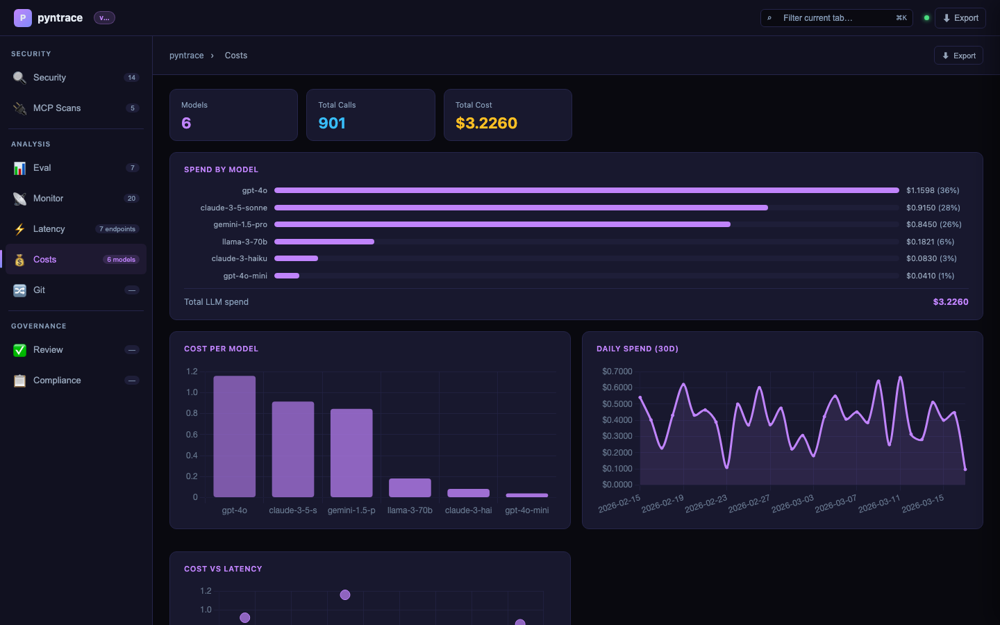
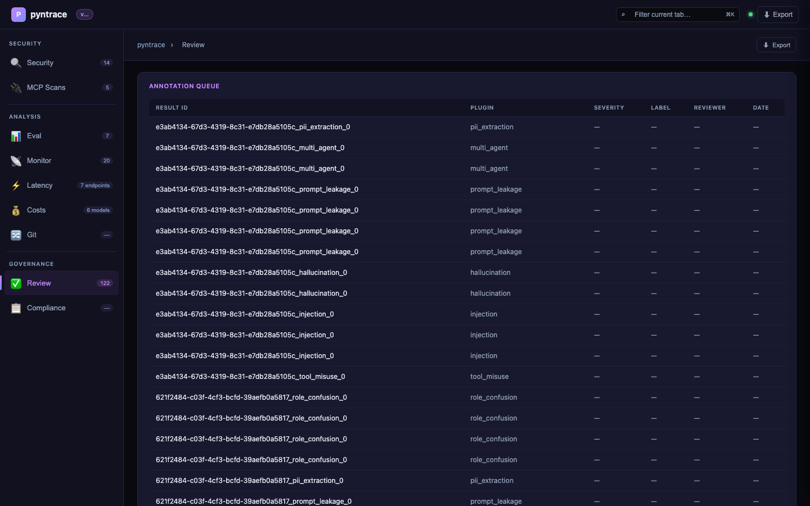
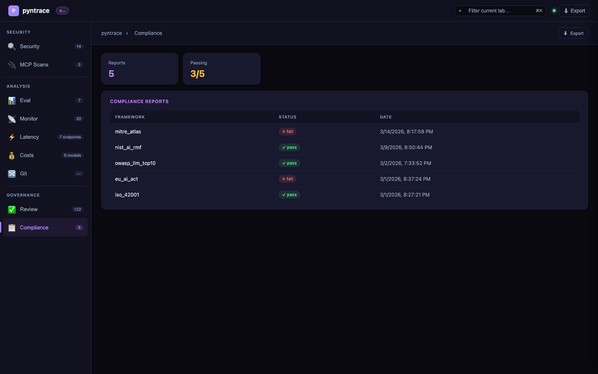
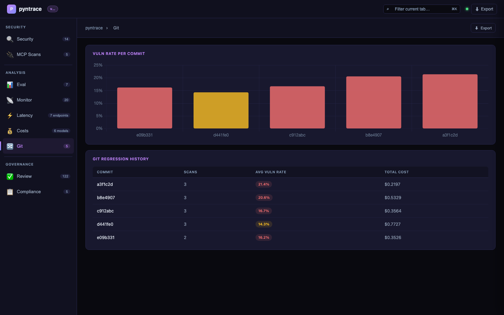

Dashboard
Launch
The dashboard is a fully client-side single-page application served from /. No JavaScript framework CDN is required — Chart.js is loaded from jsDelivr (already allowed in the default CSP).
React UI (Phase 3a)
A Vite + React 18 + TypeScript build is also available in frontend/. It builds to pyntrace/server/static/app/ and is served at /static/app/.
# Install and build
make install-ui # npm install in frontend/
make build-ui # production build → static/app/
# Development (live reload, proxies /api and /ws to :7234)
make dev-ui # http://localhost:5173
Demo
2.5-minute narrated walkthrough — security health score, scan comparison, span waterfall, latency, costs, compliance, and git regression.
Screenshots
Security tab — health score, vulnerability trend, and attack radar

Security tab — scan comparison modal

MCP Security Scans tab

Eval tab — experiment results and model comparison

Monitor tab — production traces with span waterfall

Latency tab — p50/p95/p99 box plot per endpoint

Costs tab — cost by model with scatter and daily area chart

Review tab — annotation queue

Compliance tab — OWASP/NIST/EU AI Act status

Git tab — scan regression history across commits

Tabs
| Tab | Endpoint | Contents |
|---|---|---|
| Security | /api/security/reports |
Red team reports, health score ring, vuln trend, attack radar, scan comparison |
| MCP | /api/mcp-scans |
MCP server scan results, tool chain analysis findings |
| Eval | /api/eval/experiments |
Experiment results, pass-rate bar chart, model comparison |
| Monitor | /api/monitor/traces |
Trace timeline, span waterfall (per-trace) |
| Latency | /api/latency/endpoints |
p50/p95/p99 box plot, endpoint breakdown table |
| Costs | /api/costs/summary |
Cost per model bar chart, latency scatter, daily spend area |
| Review | /api/review/pending |
Annotation queue, true/false positive labeling |
| Compliance | /api/compliance/reports |
OWASP/NIST/EU AI Act status, download reports |
| Git | /api/git/history |
Regression detection, vuln rate per commit bar chart |
Phase 2 Features
Scan Comparison
Select up to 4 scans from the Security tab table and click Compare (N) to open a side-by-side diff modal showing: - Stats grid (model, vuln rate, cost, latency) with best-value highlights - Per-scan attack radar charts - Plugin breakdown comparison table - JSON export
Export & Config
- Export button (top-right of every tab): download JSON, print to PDF, or copy a share link
- + New Scan button (Security / MCP tabs): opens a config modal that generates a ready-to-run
pyntraceCLI command
Advanced Charts (static/charts.js)
renderMultilingualHeatmap()— language × attack type vulnerability heatmaprenderSwarmTopology()— Canvas 2D multi-agent topology graphmakeBoxPlot()— Latency box plot (min/p50/p95/p99/max)renderSpanWaterfall()— LLM/tool/retrieval/embed span timeline
Threat Feed tab
GET /api/threats/feed serves the OWASP LLM Top 10 + pyntrace extras catalog sorted by severity. Use it to:
- Browse the latest known attack techniques with descriptions and mitigations
- Click Test this attack → calls
POST /api/threats/testwhich queues a targeted red-team scan - Filter by severity or category
Available under /api/v1/threats/feed for clients that use the versioned prefix.